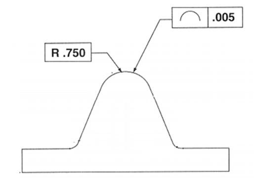
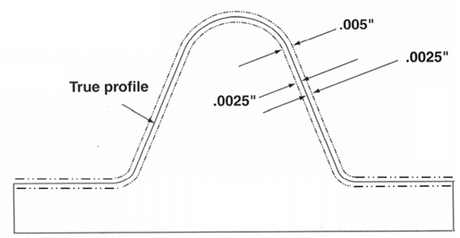
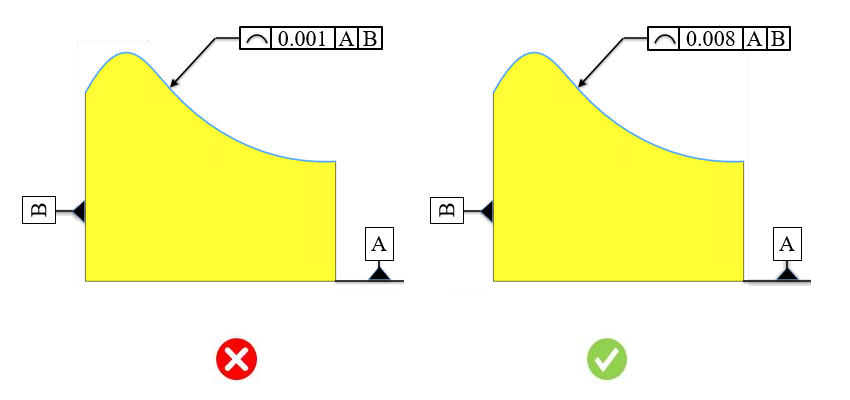

このルールは、部品サイズ範囲に基づいて最小の線輪郭度公差値をチェックします。
線輪郭度は、任意のフィーチャ内の任意の線（通常は曲線形状）を囲む公差域を定義します。これは、任意の線形公差に適用できる2次元の公差範囲です。断面形状が真の曲率半径からどの程度変化できるかを規定します。線輪郭度は、自動車のボンネットや航空機の翼などの曲面に適用されます。航空機の翼では、各断面ごとに異なるプロファイル形状が必要となり、各位置で輪郭度公差が公差域内に収まっていることを確認するために、複数回の測定が必要になります。
厳しい公差は、製品設計、製造、および検査時間に影響を与えます。公差が厳しい場合、次のような要因が追加され、最終的な製品コストが増加します。
高度または専用の検査装置が必要になる
工具交換の頻度が増加する
最終部品の合格率が低下する
スクラップ率が高くなる
原材料の使用量が増加する
公差が厳しすぎると、コスト増加と生産性低下につながります。適切な公差を持つ部品は、優れた嵌合性と機能を備え、製造効率も向上します。組立においては、公差が厳しい部品は組み付けが困難になり、組立コストが増加します。
適切な公差を指定する際には、次の点を考慮する必要があります。
部品の機能に基づいて、重要公差と非重要公差を区別する
不要に厳しい公差を避ける
品質コストを最小限に抑える
公差値を定義する前に活用できる有用なヒントは次のとおりです。
部品はどのような機能を果たすのか？
他の部品と相互作用する部品かを確認する。相互作用しない場合は、厳しい公差を避ける
重要寸法を特定し、必要に応じて公差を付与する
部品品質を向上させるために、なぜ厳しい公差が必要なのかについて、製造業者と十分に検討した上で判断する
一般的なガイドラインとして、不要に厳しい公差を追加すると、加工時間が増加する可能性があります。
DFMProでは、公差タイプ、部品サイズ範囲、および対応する公差値をユーザーが設定できます。
部品外接サイズ = 部品のおおよその最大対角長さ
ここで、
Lt = 長さ
Wt = 幅
Ht = 高さ
Ldt = 部品対角長さ



注記:
CADモデルで指定された公差は、eDrawingsレポートには表示されません。
ルール構成で設定された公差値は、公差域として扱われます。
このルールでは、面やエッジなどのCADフィーチャに関連付け（参照）された幾何公差のみが考慮されます。